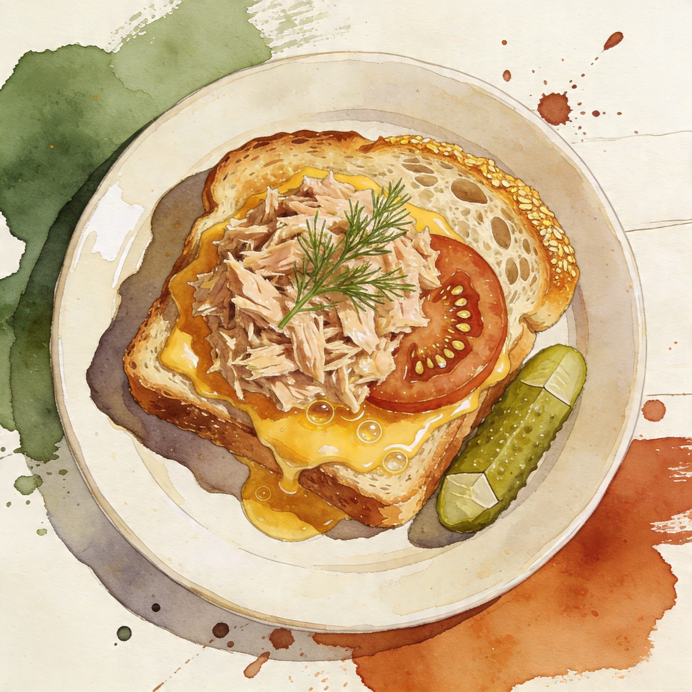

≤ 15 min — brain is fried
Tuna Melt
Diner-style tuna melt - crunch, melt, lemon.
Main
- canned tuna in oil2 cans (5 oz each)
- mayo3 tbsp
- dijon mustard1 tsp
- celery1 stalk
- red onion2 tbsp, minced
- lemon1/2
Build
- sourdough or rye4 slices
- sharp cheddar4 oz
- butter2 tbsp
Flow
- 1. Mix tuna salad Bright, not drowned in mayo.
- 2. Melt and toast Golden bread, bubbling cheese.